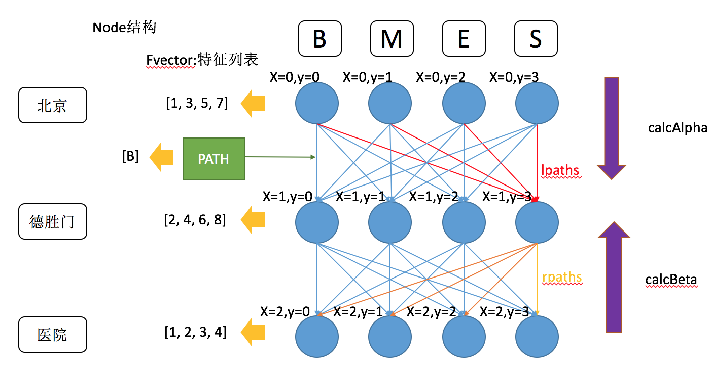
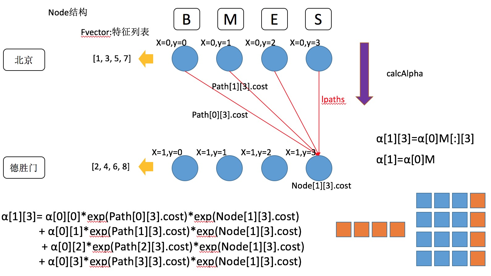

CRF原理及代码实现
Table of Contents
1 一些说明
- crfpp的训练样本是通过空行分割的下文叫做 样本段落 ，其实就是sentences
- crfpp开辟了一个全局的alpha数组来存储特征函数的参数
- crfpp开辟了一个全局的excepted数组来存放梯度
- feature_index所有的段落都用同一个，里面不仅存放了模版，还存放了所有出现过的特征feature_cache_
2 流程
2.1 main -> crf_learn
- 设置参数
- 定义
Encoder encoder encoder.learn
2.2 encoder.learn (encoder.cpp:240)
- 定义
EncoderFeatureIndex feature_index; - 定义
std::vector<TaggerImpl* > x; - 加载模版文件和训练样本,本次加载实现两个功能
- 代码如下
CHECK_FALSE(feature_index.open(templfile, trainfile)) << feature_index.what(); - 存储模版到
feature_index.unigram_templs_和feature_index.bigram_templs_ - 统计label的集合到
feature_index.y_feature_index.y_是个vector<char*>- 后面会有用到
feature_index.y(i)这个函数，就是返回第i个label feature_index.xsize=len(cols) - 1的值为段落列数减1
- 代码如下
- 第二次加载训练样本
- 每个 样本段落 定义一个临时的
TaggerImpl *_x = new TaggerImpl(); _x->open(&feature_index)_x.feature_index_ = feature_index所有的_x都使用同一个feature_indexmodel = LEARN_x.ysize_ = feature_index.ysize()也就是label的个数
_x->read(ifs)- 代码如下
bool TaggerImpl::read(std::istream *is) { char line[8192]; clear(); for (;;) { if (!is->getline(line, sizeof(line))) { is->clear(std::ios::eofbit|std::ios::badbit); return true; } if (line[0] == '\0' || line[0] == ' ' || line[0] == '\t') break; if (!add(line)) return false; } return true; }
- ifs是一个文件流，_x一次读取样本文件的一个段落
- 将段落存储到
_x.x_中_x.x_是个二维数组，假设一个段落为我 a A 爱 b B 百度 d D
- 则
_x.x_为：x_[0] = vecotr<char*>('我', 'a', 'A') x_[1] = vector<char*>('爱', 'b', 'B') x_[2] = vector<char*>('百度', 'd', 'D')
- 然后遍历
feature_index.y_, 得到label的下标 _x.answer_[s]=index(labels);_x.answer_和_x.x_下标一一对应- answer存储的是label的下标
_x.result_[s]=0_x.node_[s].resize(ysize)node的类型是std::vector<std::vector <Node *> >
- 代码如下
_x->shrink()- 每个样本段落根据特征模版来生成特征，调用
_x.feature_index.buildFeatures(this)函数- 代码如下
#define ADD { int id = this->getID(os.c_str()); \ if (id != -1) feature.push_back(id); } while (0) bool FeatureIndex::buildFeatures(TaggerImpl *tagger) { string_buffer os; std::vector <int> feature; tagger->set_feature_id(feature_cache_.size()); for (size_t cur = 0; cur < tagger->size(); ++cur) { for (std::vector<char *>::const_iterator it = unigram_templs_.begin(); it != unigram_templs_.end(); ++it) { CHECK_FALSE(apply_rule(&os, *it, cur, *tagger)) << " format error: " << *it; ADD; } feature_cache_.add(feature); feature.clear(); } for (size_t cur = 1; cur < tagger->size(); ++cur) { for (std::vector<char *>::const_iterator it = bigram_templs_.begin(); it != bigram_templs_.end(); ++it) { CHECK_FALSE(apply_rule(&os, *it, cur, *tagger)) << "format error: " << *it; ADD; } feature_cache_.add(feature); feature.clear(); } return true; } #undef ADD }
- 代码如下
_x.set_feature_id(_x.feature_index_.feature_cache_.size())// 设置feature_id- 遍历
_x.feature_index_.unigram_templs_x.feature_index_.apply_rule是将每个模版解析为固定的特征我 a A 爱 b B <= current token 百度 d D U01:%x[-1,1] 就解析成 U01a 因为[-1,1]对应着a这个字段 U02:%x[-1,1]/%[1,0] -> U02a/百度
- 根据模版解析出来的特征存储到os对象中
id = _x.feature_index_.getID(os.c_str()),作用是给解析出来的特征全局编号，如果有则直接取出，如果没有，则新建编号- 这个id不是随便给的，而是一个特征，就占据label个数大小的空间，id就是起始位置。所以对于alpha，alpha[id + node->y]就是y=node->y时，该特征的alpha值
- 注意这里是对_x.x_中的每一行都进行解析，每一行解析完后会得到一个feature_id的vector，存储到
_x.feature_index_.feature_cache_这个vector中。 - 需要注意的是，每一个
_x.feature_index_都指向同一个对象，所以，feature_cache_最终是一个存储了每一行，应用特征模版解析出特征后，其特征编号的vector - 那对应每个段落如何区分？这就是前面
_x.set_feature_id的作用，每个_x会根据当前feature_cache_.size()的大小保存一个feature_id
- 遍历
_x.feature_index_.bigram_templs- 同unigram
- 完成后，对
_x.x_, _x.result_, _x.node_, _x.answer_利用swap执行了一个内存从新分配的动作
- 每个样本段落根据特征模版来生成特征，调用
_x.set_thread_id(), 分配线程id
- 每个 样本段落 定义一个临时的
- 这个时候，最开始定义的x会执行
x.push_back(_x) - 全局唯一的
feature_index.shrink(freq)会根据特征出现频次进行筛选 - 最终，会根据设置的参数，执行
runCRF(x, &feature_index, &alpha[0], maxitr, C, eta, shrinking_size, thread_num, true)
2.3 runCRF(encoder.cpp:148)
- 进行了一些多线程的设置
- 线程中，执行了
x[i]->gradient(&expected[0]) - 代码如下
void run() { obj = 0.0; err = zeroone = 0; std::fill(expected.begin(), expected.end(), 0.0); for (size_t i = start_i; i < size; i += thread_num) { obj += x[i]->gradient(&expected[0]); int error_num = x[i]->eval(); err += error_num; if (error_num) ++zeroone; } }
- start_i是线程index，每个线程处理start_i + k*thread_num位置的x
- eval是统计answer和result的不同个数。
- obj就是损失函数
- expect是梯度向量
2.3.1 x[i].gradient(tagger.cpp:309)
- feature_index.size()=unigram特征数x状态数+bigram特征数*状态数*状态数，并且把这个数量设置为alpha的数量
- x[i].buildLattice
- feature_index.rebuildFeatures(this)
- 获取feature_id
- 根据feature_id从feature_cache_中获取段落的特征编号
- rebuild的作用就是遍历段落的每一行，构建网格 
- 节点对应这unigram，边对应着bigram
- 似乎所有的边对应的特征都是一个，B
- 每个Node都有两个vector,lpath和rpath,分别指向对应的路径
- 对所有node执行feature_index_->calcCost(Node[i][j])
- 代码如下
void FeatureIndex::calcCost(Node *n) { n->cost = 0.0; #define ADD_COST(T, A) \ { T c = 0; \ for (int *f = n->fvector; *f != -1; ++f) c += (A)[*f + n->y]; \ n->cost =cost_factor_ *(T)c; } if (alpha_float_) ADD_COST(float, alpha_float_) else ADD_COST(double, alpha_); #undef ADD_COST }
- 这里需要理解为什么
c += alpha[*f + n->y]; *f就是特征的编号，但是这个编号有个trick，如果这个特征是unigram，那么下一个编号是cur+len(label),如果是bigram，那么下一个编号为cur+len(label)^2- 所以
*f + n->y就对应alpha预留出的空间- Node对应unigram，Node.cost就对应y=yi时的 \(\sum_{i,k}\mu_{k}s_{k}(y_{i},x,i)\) ,
alpha[*f + n->y]就是 \(\mu_{k}\)
- Node对应unigram，Node.cost就对应y=yi时的 \(\sum_{i,k}\mu_{k}s_{k}(y_{i},x,i)\) ,
- 代码如下
- 对所有的边执行feature_index_->calcCost(Path)
- 代码如下
p->cost = 0.0; #define ADD_COST(T, A) \ { T c = 0.0; \ for (int *f = p->fvector; *f != -1; ++f) \ c += (A)[*f + p->lnode->y * y_.size() + p->rnode->y]; \ p->cost =cost_factor_*(T)c; } if (alpha_float_) ADD_COST(float, alpha_float_) else ADD_COST(double, alpha_); } #undef ADD_COST
- 这里
c += alpha[*f + p->lnode->y * y_.size() + p->rnode->y];- 其实这里的p->fvector就只有一个值，B的下标,所以
*f后面共有len(label)^2个值，对应着边 - path是bigram, path.cost就对应yi-1和yi两个值固定时的 \(\sum_{i,k}\lambda_{k}t_{k}(y_{i-1}, y_{i},x,i)\) ,
alpha[*f + p->lnode->y * y_.size() + p->rnode->y]对应\(\lambda_{k}\) - 图上看上去远大于len(label)^2条边，其实Path(Node[i-1,j],Node[i,k])和Path(Node[i,j],Node[i+1,k])可以认为是一个函数，故可以认为是一样的边
- 刚开始alpha都是0，但是由于设置了迭代次数，后面alpha的值会通过
lbfgs.optimize进行改变，然后每次迭代都执行gradient
- 其实这里的p->fvector就只有一个值，B的下标,所以
- 代码如下
- addCost操作就是把每个节点和边上的cost值设置为函数参数相加,就对应着M矩阵的值
- feature_index.rebuildFeatures(this)
- x[i].forwordbackword
- 从前往后遍历每一个Node，调用Node[i][j]->calcAlpha
- 代码如下
void Node::calcAlpha() { alpha = 0.0; for (const_Path_iterator it = lpath.begin(); it != lpath.end(); ++it) alpha = logsumexp(alpha, (*it)->cost +(*it)->lnode->alpha, (it == lpath.begin())); alpha += cost; }
- exp(Node[i][j].cost)是yi=j时的观测概率，Node的所cost，就类似HMM的状态概率矩阵
- exp(path[p][q].cost)是yi-1=p,yi=q的转移概率，类似HMM中的转移概率矩阵
- 定义M[p][q]=exp(Node[i][q])*exp(Path[p][q]),就相当于从状态p到状态q的概率。
- 定义 \(\alpha_{i}[j]\) 为i位置，yi=j的前向概率
- 计算如图所示
- 
- 这里又有一个trick。每个节点保存的Node[i][j].alpha=log(α)
- 这样做的原因猜测是为了方便计算，因为看上图乘的概率都是exp格式的，用exp表示可以方便转化成加法
- 用 \(\alpha\) 的时候，采用exp(Node[i][j].alpha)即可
- logsumexp(x,y)这个函数是计算 \(log(e^{x} + e^{y})\)
- logsumexp(logsumexp(x,y),z) = \(log(e^{x} + e^{y} + e^{z})\)
- (*it)->cost是边的转义概率
- (*it)->lnode->alpha就是lpath对应节点的alpha
- cost是当前节点状态概率
- 以 \(Node[1][3]\) 节点为例，解释上面的代码
Node[1][3].alpha = log(exp(Node[0][0].alpha)*exp(Path[0][3].cost)*exp(Node[1][3].cost) + \ exp(Node[0][1].alpha)*exp(Path[1][3].cost)*exp(Node[1][3].cost) + \ exp(Node[0][2].alpha)*exp(Path[2][3].cost)*exp(Node[1][3].cost) + \ exp(Node[0][3].alpha)*exp(Path[3][4].cost)*exp(Node[1][3].cost)) = log(exp(Node[0][0].alpha + Path[0][3].cost + Node[1][3].cost) + \ exp(Node[0][1].alpha + Path[1][3].cost + Node[1][3].cost) + \ exp(Node[0][2].alpha + Path[2][3].cost + Node[1][3].cost) + \ exp(Node[0][3].alpha + Path[3][3].cost + Node[1][3].cost)) = log(exp(Node[0][0].alpha + Path[0][3].cost) + \ exp(Node[0][1].alpha + Path[1][3].cost) + \ exp(Node[0][2].alpha + Path[2][3].cost) + \ exp(Node[0][3].alpha + Path[3][3].cost)) + Node[1][3].cost - \(Node[1][3].cost\) 可以提取出来的原因是
- a = log(ex+k + ey+k)
- ea = ex+k + ey+k
- eae-k = ex+ke-k + ey+ke-k
- ea-k = ex + ey
- a - k = log(ex + ey)
- a = log(ex + ey) + k
- 代码如下
- 从后往前遍历，calcBeta
- 代码如下
void Node::calcBeta() { beta = 0.0; for (const_Path_iterator it = rpath.begin(); it != rpath.end(); ++it) beta = logsumexp(beta, (*it)->cost +(*it)->rnode->beta, (it == rpath.begin())); beta += cost; // 这里为什么要执着的加个cost??? 因为为了递推公式
- calcBeta和calcAlpha从代码上看是十分类似的。网上很多文章对calcBeta都是说了一句和calcAlpha类似就不讲了。但是这里隐藏着一个陷阱。
- 假设以 \(Node[2][1].beta\) 为例
Node[2][1].beta = log(exp(Node[3][0].beta)*exp(Path[1][0].cost)*exp(Node[3][0].cost) + \ exp(Node[3][1].beta)*exp(Path[1][1].cost)*exp(Node[3][1].cost) + \ exp(Node[3][2].beta)*exp(Path[1][2].cost)*exp(Node[3][2].cost) + \ exp(Node[3][3].beta)*exp(Path[1][3].cost)*exp(Node[3][3].cost)) = log(exp(Node[3][0].beta + Path[1][0].cost + Node[3][0].cost) + \ exp(Node[3][1].beta + Path[1][1].cost + Node[3][1].cost) + \ exp(Node[3][2].beta + Path[1][2].cost + Node[3][2].cost) + \ exp(Node[3][3].beta + Path[1][3].cost + Node[3][3].cost)) - 这里明显可以看出，有个cost根本提不出来
- 这其实是作者的又一个trick，作者让 \(Node[i][j].beta_{new}=Node[i][j].beta+Node[i][j].cost\)
- 将上面的 \(Node[2][1].beta\) 带入，得到
Node[2][1].beta_new = Node[2][1].beta + Note[2][1].cost = log(exp(Node[3][0].beta_new + Path[1][0].cost) + \ exp(Node[3][1].beta_new + Path[1][1].cost) + \ exp(Node[3][2].beta_new + Path[1][2].cost) + \ exp(Node[3][3].beta_new + Path[1][3].cost)) + Node[2][1].cost - 所以说，\(Node[2][1].beta - Node[2][1].cost\) 才真正对应着公式中的 β,一定要牢记这一点，不然后面还有很多坑要踩。
- \alpha和\beta的区别
- \alpha是，到时刻t，观测为x1,x2,…,xt的条件下，该时刻状态为yi的概率。P(yt|x1:t)
- \beta是，到t时刻，该时刻状态为yi的条件下，后续观测为xt+1,xt+2,..,xT的概率,P(xt+1:T|yt)
- 代码如下
- 最后计算Z
- Z使用Beta计算的
Z_ = 0.0; for (size_t j = 0; j < ysize_; ++j) Z_ = logsumexp(Z_, node_[0][j]->beta, j == 0);
- 按理说, Z也包含了 β 多余的cost, 难道是因为Z值固定，所以就不care了？
- Z使用Beta计算的
- 从前往后遍历每一个Node，调用Node[i][j]->calcAlpha
- 遍历Node，执行Node[i][j]->calcExpectation(expected, Z_, ysize_);
- 代码如下
void Node::calcExpectation(double *expected, double Z, size_t size) const { const double c = std::exp(alpha + beta - cost - Z); for (int *f = fvector; *f != -1; ++f) expected[*f + y] += c; for (const_Path_iterator it = lpath.begin(); it != lpath.end(); ++it) (*it)->calcExpectation(expected, Z, size); }
- 这里的c对应公式
- $$P(Y_{i}=y_{i}|x)=\frac{\alpha_{i}^{T}(y_{i}|x)\beta_{i}(y_{i}|x)}{Z(x)}$$
- 可以看到，代码是
exp(alpha + beta - cost -Z),这里用的是beta - cost
- expected的下标格式和全局alpha数组的一样
- 由于c是当前节点位置y=node.y的条件概率
- 命中特征是f为1，故
expected[*f+y]存储的就是状态特征函数s(y=node.y,x,i)的期望
- 然后对被一条边求期望，也就是转移特征函数的期望
- 代码如下
void Path::calcExpectation(double *expected, double Z, size_t size) const { const double c = std::exp(lnode->alpha + cost + rnode->beta - Z); for (int *f = fvector; *f != -1; ++f) expected[*f + lnode->y * size + rnode->y] += c; }
- 这里的c对应公式 $$P(Y_{i-1}=y_{i-1}, Y_{i}=y_{i}|x)=\frac{\alpha_{i-1}^{T}(y_{i-1}|x)M_{i}(y_{i-1},y_{i}|x)\beta_{i}(y_{i}|x)}{Z(x)}$$
- α 就对应
lnode->alpha - β 对应
rnode->beta-rnode->cost,这里需要注意，要减去这个cost - M就对应边和点的cost和，
cost + rnode->cost - 两个
rnode->cost相互抵消，但是千万不要以为可以直接对应到公式 - bigram,边，转移特征函数的期望计算类似Node的
- 代码如下
- 代码如下
- 减去经验期望
- 代码如下
for (size_t i = 0; i < x_.size(); ++i) { for (int *f = node_[i][answer_[i]]->fvector; *f != -1; ++f) --expected[*f + answer_[i]]; s += node_[i][answer_[i]]->cost; // UNIGRAM cost const std::vector<Path *> &lpath = node_[i][answer_[i]]->lpath; for (const_Path_iterator it = lpath.begin(); it != lpath.end(); ++it) { if ((*it)->lnode->y == answer_[(*it)->lnode->x]) { for (int *f = (*it)->fvector; *f != -1; ++f) --expected[*f +(*it)->lnode->y * ysize_ +(*it)->rnode->y]; s += (*it)->cost; // BIGRAM COST break; } } }
- answer里面存放了该行的label值
- 样本总是认为是正确的，故函数在取值为answer的经验期望就是1。固有
--expected - s是未归一化的经验概率，最后返回Z_ - s，
s-Z_的值就是下面的最大似然估计的损失函数，这里算Z_ - s其实是让损失函数最小化，同时，对应的梯度也取了负号- 本来损失函数是 \(log(exp(s)/exp(Z))=s-Z\)
- 其实返回的损失函数是\(log(exp(Z_)/exp(s))=Z_-s\)
- 这里是excepted是条件期望减去经验期望，正好对应上面对损失函数加了个负号
- 经验期望减去条件期望就是梯度的证明如下：
- 给定x条件，y的条件概率 $$P(y|x)=\frac{1}{Z(x)}exp(\sum_{i=1}^{N}\sum_{t=1}^{T}\sum_{k=1}^{K}\lambda_{k}f_{k}(y_{t},y_{t-1},x_{t}))$$
- \(假设样本为x_{i}, y_{i}\)
- 极大似然估计 $$l(\theta)=\sum_{i=1}^{N}log p(y_{i}|x_{i})$$
- $$l(\theta)=\sum_{i=1}^{N}\sum_{t=1}^{T}\sum_{k=1}^{K}\lambda_{k}f_{k}(y_{t}^{(i)},y_{t-1}^{(i)},x_{t}^{(i)})-\sum_{i=1}^{N}log Z(x^{(i)})$$
- $$g(\lambda_{k})=\sum_{i=1}^{N}\sum_{t=1}^{T}f_{k}(y_{t}^{(i)},y_{t-1}^{(i)},x_{t}^{(i)}) - \sum_{i=1}^{N}\sum_{t=1}^{T}\sum_{y,y'}\frac{1}{Z(x^{(i)})}exp(\sum_{k=1}^{K}\lambda_{k}f(y,y',x_{t}^{(i)})f(y,y',x_{t}^{(i)})$$
- $$g(\lambda_{k})=\sum_{i=1}^{N}\sum_{t=1}^{T}f_{k}(y_{t}^{(i)},y_{t-1}^{(i)},x_{t}^{(i)}) - \sum_{i=1}^{N}\sum_{t=1}^{T}\sum_{y,y'}p(y,y',x_{t}^{(i)})f(y,y',x_{t}^{(i)})$$
- 前一项就是经验期望，后一项就是条件期望
- 代码如下
- viterbi
- 代码如下
void TaggerImpl::viterbi() { for (size_t i = 0; i < x_.size(); ++i) { for (size_t j = 0; j < ysize_; ++j) { double bestc = -1e37; Node *best = 0; const std::vector<Path *> &lpath = node_[i][j]->lpath; for (const_Path_iterator it = lpath.begin(); it != lpath.end(); ++it) { double cost = (*it)->lnode->bestCost +(*it)->cost + node_[i][j]->cost; if (cost > bestc) { bestc = cost; best = (*it)->lnode; } } node_[i][j]->prev = best; node_[i][j]->bestCost = best ? bestc : node_[i][j]->cost; } } double bestc = -1e37; Node *best = 0; size_t s = x_.size()-1; for (size_t j = 0; j < ysize_; ++j) { if (bestc < node_[s][j]->bestCost) { best = node_[s][j]; bestc = node_[s][j]->bestCost; } } for (Node *n = best; n; n = n->prev) result_[n->x] = n->y; cost_ = -node_[x_.size()-1][result_[x_.size()-1]]->bestCost; }
- 动态规划找了条概率最大的路径
- 代码如下
- 正则化
2.4 预测
- 代码如下
bool TaggerImpl::parse() { CHECK_FALSE(feature_index_->buildFeatures(this)) << feature_index_->what(); if (x_.empty()) return true; buildLattice(); if (nbest_ || vlevel_ >= 1) forwardbackward(); viterbi(); if (nbest_) initNbest(); return true; }